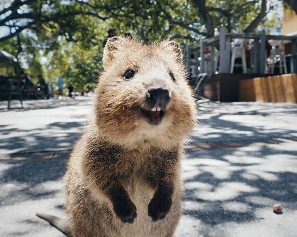
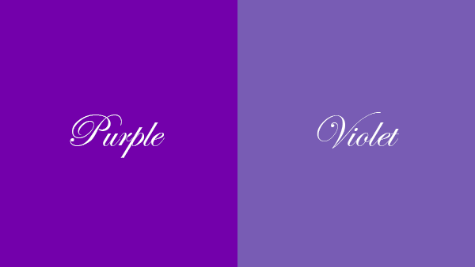

My favorite things

A super cute quokka is smiling!!!

purple is my favorite color. Violet is purple so that I also like it.
The sky is always blue. Especially, above the sea. They are mixed with each other.